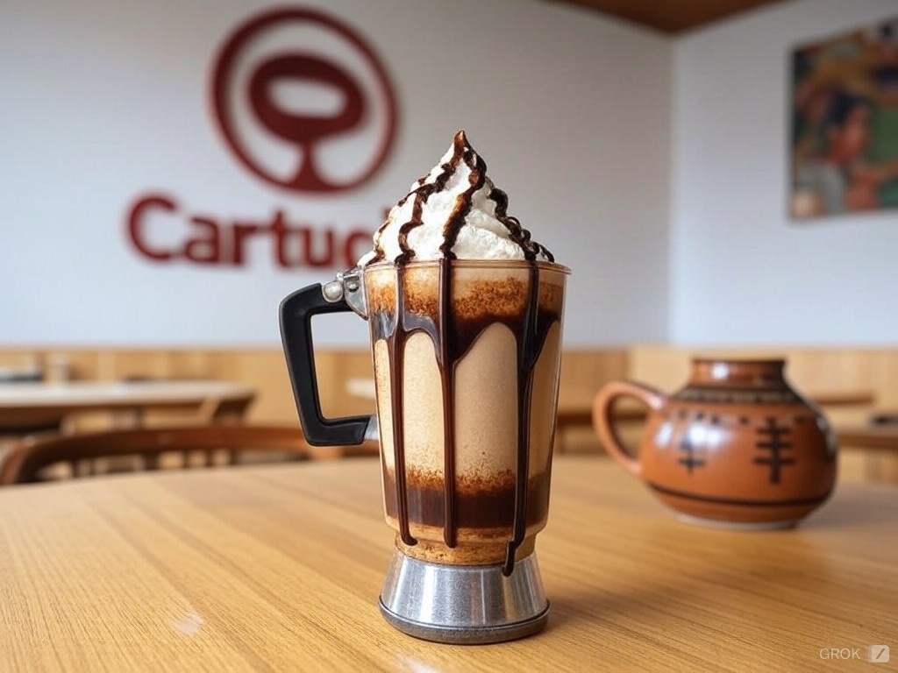

Nuestras Bebidas

Auténtico Chocolate Oaxaqueño
Acompañalo con Pan de Yema.

Cáfe Americano
Café negro suave y aromático.

Latte
Café suave con leche cremosa al vapor.

Frappe de Moka
Mezcla helada de café, chocolate y crema.

Cholate Frío Oaxaqueño
Deleitate con el auténtico sabor del chocolate Oaxaqueño.


:max_bytes(150000):strip_icc()/arroz-con-leche-mexican-rice-pudding-2343000-hero-07-07777a21c5e245cbb9e572158b2fcddc.jpg)